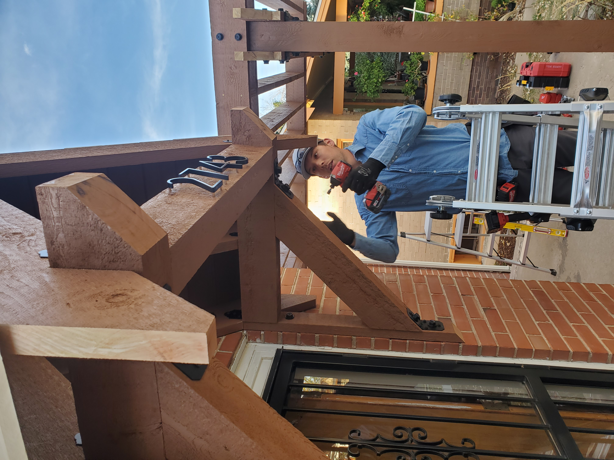
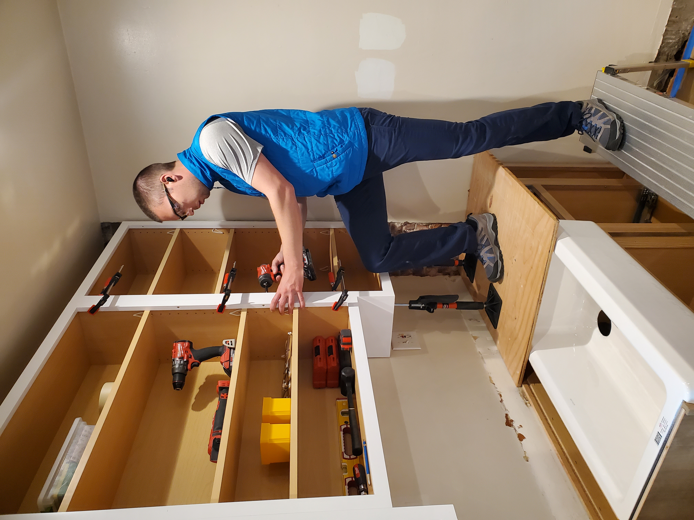

Daniel Fros - Thoughtful Remodeling
Hello, my name is Daniel Fros and welcome to my little section of the internet. Stick around and I’d like to share some about myself, whether you’re here just to learn more about me, or to consider partnering together on a remodel project.

I like to think I have a bit of a different approach to construction. I’ve been at it full time since 2012 (almost exclusively residential remodeling) and I’ve learned so many things along the way – about myself, the trades, and working with people. My profession keeps me engaged on a day-in, day-out basis because it constantly challenges me to keep refining the catalog of information in my head – from how to write up the most accurate and honest contract, to executing a process in the trades that gives me the peace of mind to sleep easy at night.  That’s largely what I’m after – a sense of pride and contentment at the end of the day. It is a lousy feeling to be uncertain about the viability of one’s work. A fundamental lesson over and over again is to take precautions and remain diligent so that the results stand up to both a discerning eye and the test of time. For better or for worse, I am a perfectionist through and through. My eye always sees the “little things,” so I pay homage to how I’m wired and operate in a meticulous way. I hate to be bogged down by “would’ve, could’ve, should’ve.” I’m all about diligence and efficiency rather than speed. There are certainly other companies that could complete a project on a shorter timeline. I’m a small company, and prefer to perform many of the tasks myself or under my watchful eye, so that I can control the quality of the finished product. I have formulated and continue to refine the list of designers and subcontractors I bring on board to help with any given project. Much of the time I work solo. My vision for the company is to take on more challenging projects, keep refining the skills within my wheelhouse, offer up the highest quality service I can muster, and remain small. I only want to expand in scope to the degree that individual clients still have my devoted focus. I prefer to operate in a way that allows for one project at a time, full time.
The end result after the proverbial dust has settled is the most important thing – ideally everything you hoped it to be. However, remodeling is also a process and something the client must live through, so the customer experience is always on my mind. Remodeling can be inherently stressful at times.  There are many details to wade through to make it just right, problems to solve on-the-fly. I view it as part of my job to eliminate the unnecessary stress – the lack of transparency, the cutting of corners, the wondering when workers will show up, and especially the dang mess. I fancy myself as a very clean and organized contractor in a messy industry. Again, something that runs in my blood for better or for worse (thanks mom). I take site protection and clean up seriously. You can expect dust walls, zip walls, floor protection, air scrubbers, trash bagged up, materials neatly stacked, and a work zone free of clutter. Most clients live in their homes through the construction process, so I respect all that entails – home office noise considerations, schedules, keeping an eye on pets, locking doors, parking considerations, and continuing to earn your trust as I move through the corners your home. I view every move I make as a way to build my reputation. Referrals and word-of-mouth are the backbone of my business, so I care about the impression I leave.